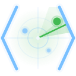
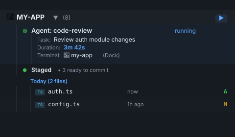
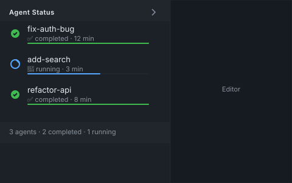
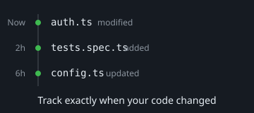
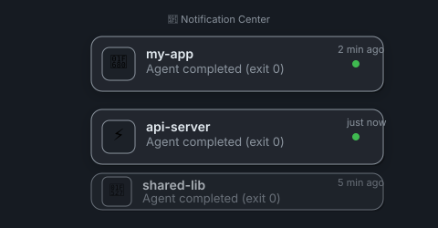

Discovery + Grouping
`ps` scanning and Claude session-file detection auto-register active agents.
- External terminal discovery (not VS Code-only)
- Auto-group by project and git worktree
- Agent badges for Claude, Codex, Gemini

The agent control tower for VS Code. Auto-discover and manage Claude, Codex, and Gemini sessions running across Ghostty, iTerm2, Terminal.app, and tmux.

One sidebar for 2-10 active agents
Track running, completed, failed, stuck, and stopped sessions without terminal tab roulette.
See agents VS Code did not spawn
Native Agent Sessions only sees what VS Code launched. Command Central sees external terminal sessions too.
Act without leaving your editor
Kill, restart, open output, open diff, and resume completed sessions directly from the sidebar.
`ps` scanning and Claude session-file detection auto-register active agents.
Operational visibility for every running agent from one place.
Control long-running sessions from the tree view and context menu.
See what each agent changed before you open a PR.
Know when work finishes even when your focus is elsewhere.



Command Central is purpose-built for developers running agents from both VS Code and external terminals.
| Capability | Command Central | VS Code Agent Sessions | cmux/dmux |
|---|---|---|---|
| Sees agents launched outside VS Code | ✅ Yes | ❌ No | ⚠️ Terminal-scoped only |
| Groups by project and git worktree | ✅ Automatic | ⚠️ Session list only | ❌ Manual naming |
| Inline lifecycle actions (kill/restart/output/diff) | ✅ Full set | ⚠️ Limited controls | ❌ Terminal commands |
| Per-agent file list with +/- diff summary | ✅ Built in | ❌ Not available | ❌ Not available |
| Completion/failure notifications with quick actions | ✅ Yes | ⚠️ Basic | ❌ No |
| Best fit | 2-10 agents across terminals + worktrees | Single-IDE launched sessions | Power users living in tmux panes |
Single extension install. Keep your current terminal workflow.
Install from the Marketplace
No daemon setup. No migration from your current terminal setup.
Run agents anywhere
Ghostty, iTerm2, Terminal.app, tmux, or integrated VS Code terminals.
Manage from one sidebar
Monitor, control, and inspect every session from inside VS Code.
Free and open source.
ext install oste.command-central